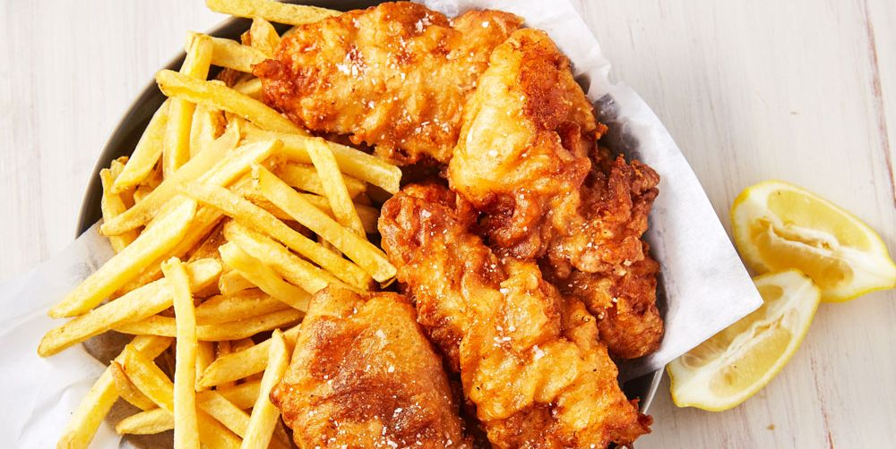
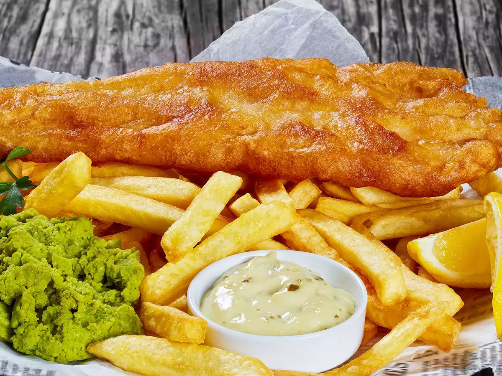
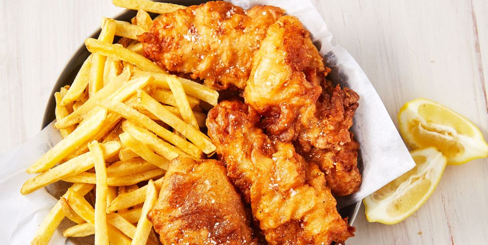
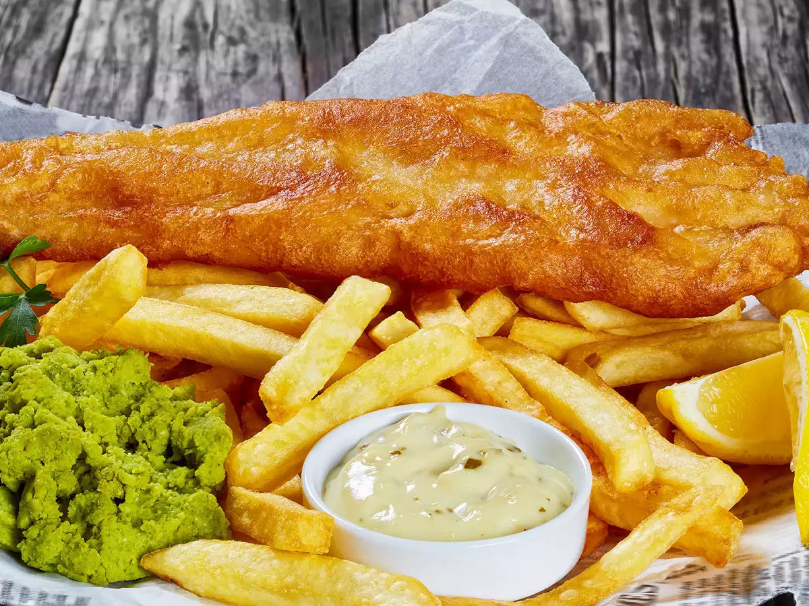

FISH AND CHIPS
Fish and chips is a hot dish consisting of fried fish in batter served with chips. The dish originated in England and is an example of culinary fusion, combining Iberian Jewish fried fish with Belgian fried potatoes.
 Fish and chips is a hot dish consisting of fried fish in batter served with chips. The dish originated in England and is an example of culinary fusion, combining Iberian Jewish fried fish with Belgian fried potatoes.
 